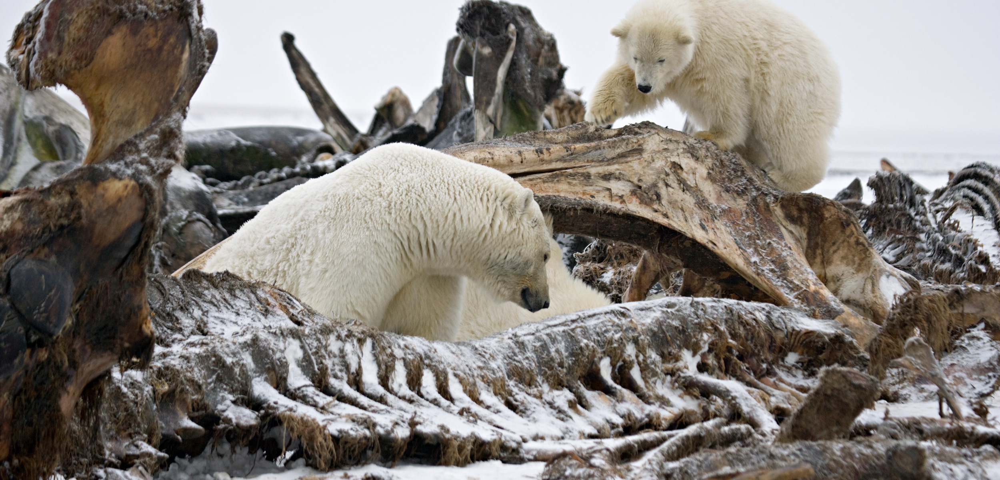

LIMITATIONS
- Polar bears are a group of animals that live in cold regions.therefore The limiting factors in the polar bears habitat is the ice. The ice is where the polar bears live and the humans are impacting it because of their pollution. The polution is affecting the ice and the ice is melting leaving the polar bears no where to go.
The short term and long term effects on the polar bears habitat are the same the ice is melting. The future for the ecosystem will not look good there will not be many polar bears, hardly any. In 5 to 10 years the ice in the ecosystem will have mostly melted sending more water into the oceans causing the ocean side cities and towns to flood.
- It is still happening because its to hard to stop doing the things were doing ex. driving, electronics, factories. The benefits to us are that we can still use cars to drive around to places we need to go also we need to use electricty to live like heating our homes and charging our electronics.Most people are not going to change how they are living because its the way of life now.
Polar bears are limited by the availability of their prey, mainly seals. Sea ice is changing due to changing climate patterns and this is changing polar bears’ access to seals. In the short term, these changes may be positive for polar bears in some parts of the NWT but may be negative in others.
Non-renewable resource exploration and development that disturb bears in maternity dens can result in premature abandonment and increased chances of cub mortality. Environmental changes, such as a crude oil spill, could have a devastating effect on an entire sub-population.
